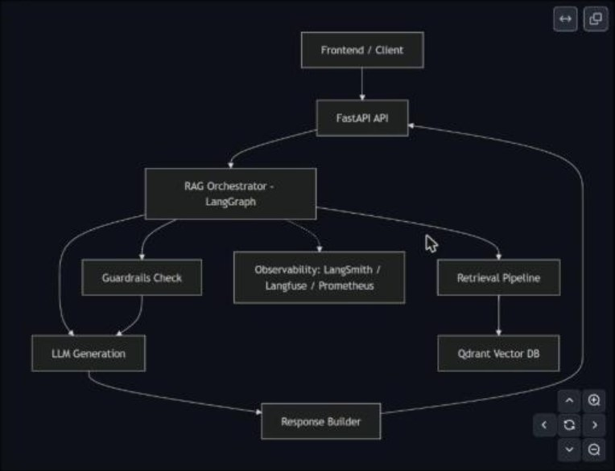
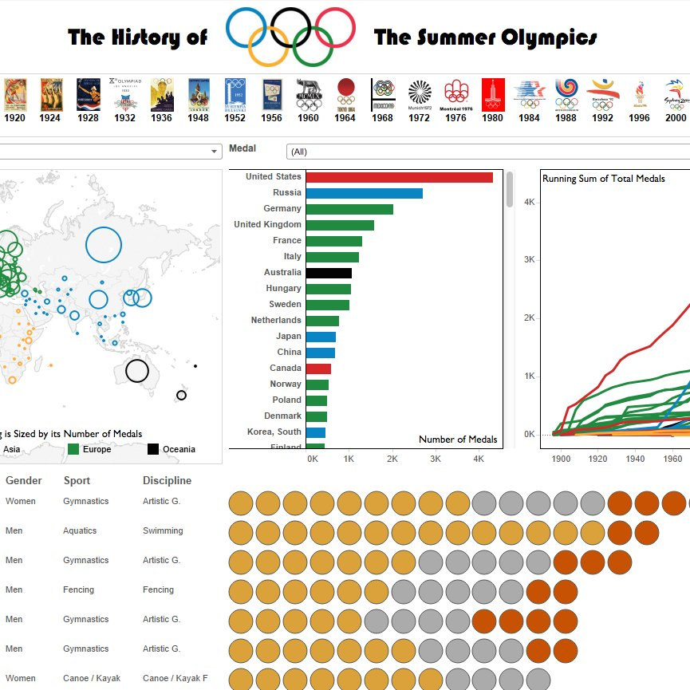
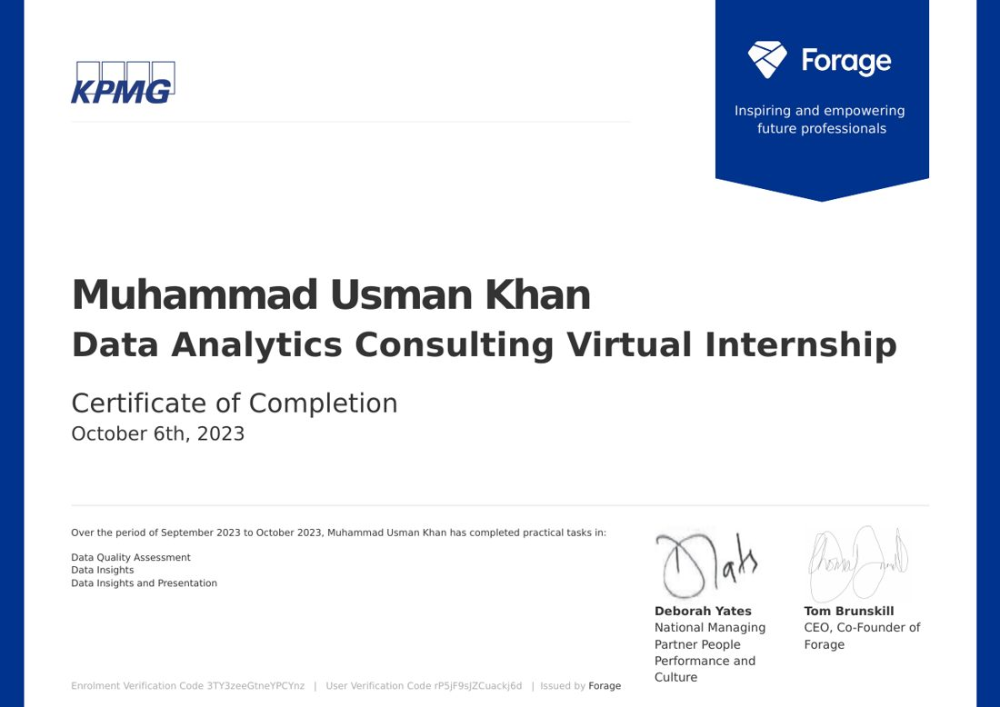
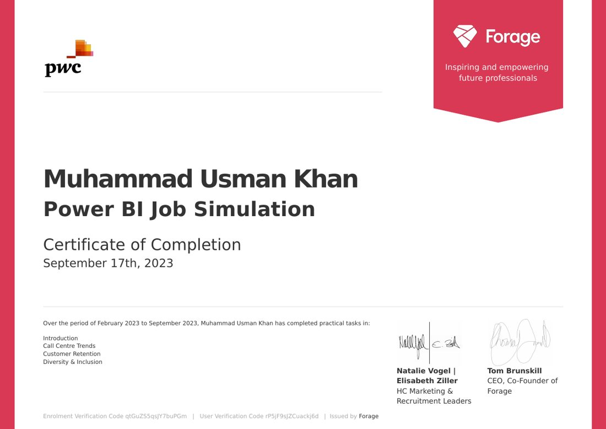
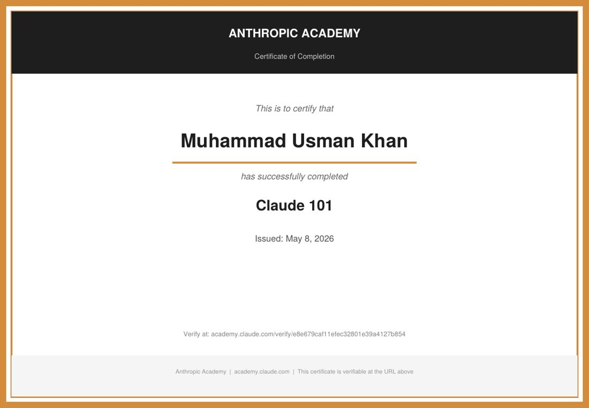
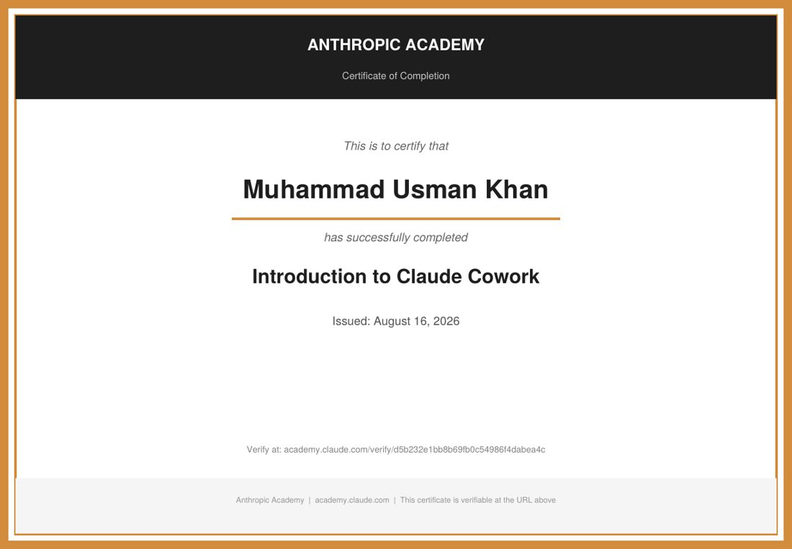
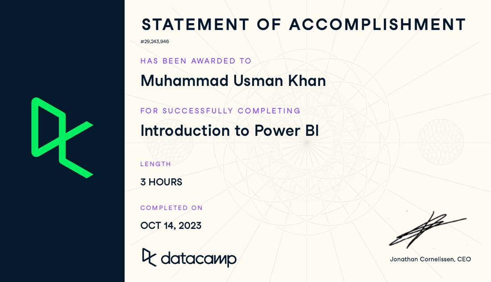
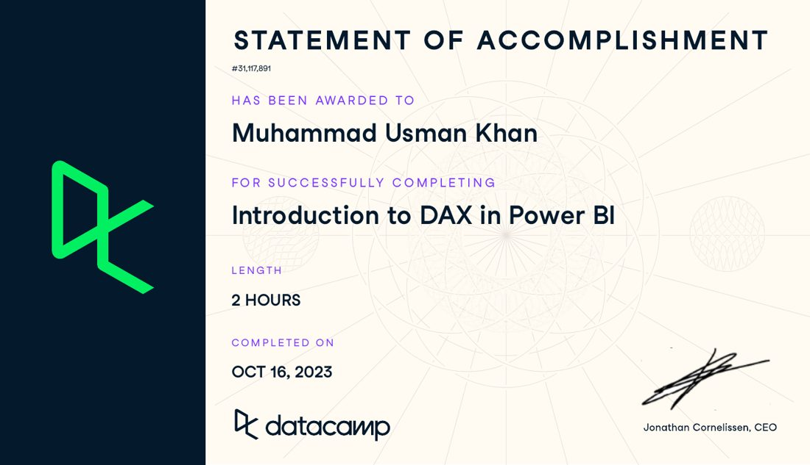
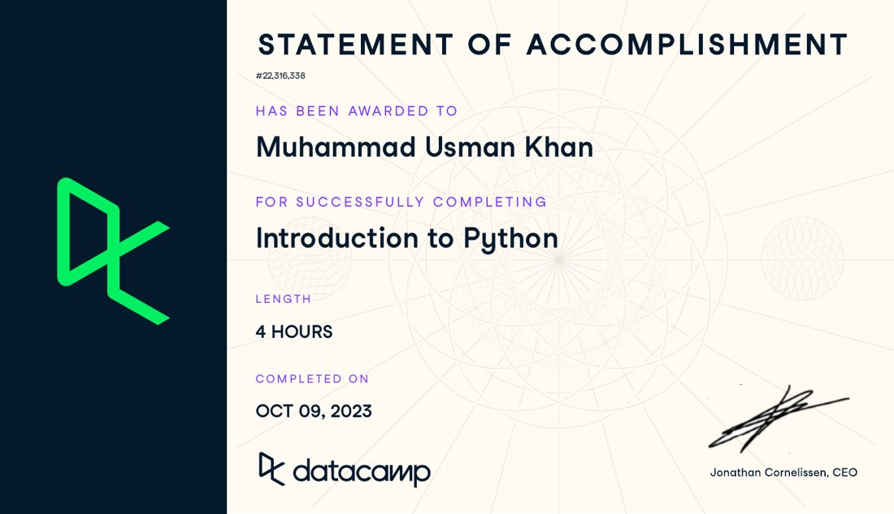
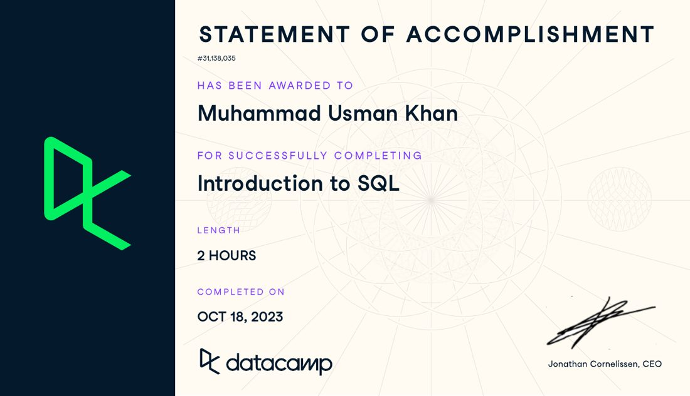

About
I'm a data professional with about 9 years of analytics experience across Pakistan, the UK and Germany, now focused on data science and machine learning. I build end-to-end solutions: data pipelines with SQL and PySpark, business intelligence dashboards in Power BI and Tableau that people use to make decisions, and ML and LLM applications, from churn and price prediction to a production-style agentic RAG system. I'm completing an MSc in Data Science at Arden University Berlin and hold an MBA with Distinction, so I can connect models and metrics to business value.
Featured projects

Enterprise-Grade Agentic RAG App
Modular RAG system from ingestion to guardrailed, evaluated answers. Jina embeddings, Qdrant Cloud, GPT-OSS-120B via Portkey/Groq, NeMo Guardrails, Langfuse tracing and DeepEval. All evaluation metrics passing; deployed on Cloud Run.

India Domestic Flight Price Prediction
300K flights across 6 airlines. Cleaning, EDA and hypothesis testing (t-test, ANOVA, chi-square), then 5 models compared. Random Forest won with R² 0.978, RMSE ₹3,378 and MAPE 10.6%. Travel class alone drives 83% of the price.

Netflix Customer Churn Prediction
Predicts which of 25,000 subscribers will cancel, based on watch time, subscription type, genre and login activity, with a custom churn definition.

CNN for MNIST Classification
Modular, production-style CNN pipeline (training, evaluation, visualisation, saved model) showing how CNNs beat classical ML on image data. Includes an academic report.
PySpark Cloud Pipeline
Advanced analytics and machine learning on a cloud data pipeline with PySpark, built for the Big Data & Cloud Computing MSc module.

PwC: Customer Churn & Diversity Dashboards
Two Power BI reports. Telco churn analysis (7,043 customers, 1,869 churned) found month-to-month contracts, short tenure, fibre optic and electronic-check payment drive churn. A D&I report on hiring, promotion and leadership gaps for a 500-person pharma company.

KPMG: Customer Segmentation for Sprocket Central
Data quality assessment and cleaning in Python, customer insights, RFM segmentation (Platinum to Bronze) to choose 1,000 new customers to target, and a Power BI dashboard plus client presentation.

Retail Profitability Dashboard
End-to-end visual analytics on retail sales data: an interactive HTML dashboard plus 12+ charts (heatmaps, trends, city and product profitability) turned into business insights.

Tableau Public Dashboards
Interactive Tableau dashboards, including a History of the Summer Olympics dashboard (medals by country, sport and gender), published on Tableau Public.
COVID-19 Data Exploration
Data cleaning and exploratory analysis of global COVID-19 data in SQL: joins, CTEs, window functions and views.
Spotlight: Enterprise-Grade Agentic RAG App
An agentic RAG system built end to end: ingestion, vector search on Qdrant, re-ranking, a planner that decides when to retrieve, guardrails, an LLM gateway, tracing and automated evaluation. It's deployed with Docker on Google Cloud Run. View the code →


Experience & education
Data Analyst · Third Eye HR GmbH, Berlin
HR and payroll data analytics: reporting, data processing and automation.
MindStorm Services
Built Power BI reporting that delivered a £10,000 productivity saving.
NETKOM
Designed a KPI framework supporting $2M in revenue.
Turnotech
Analytics that drove $1M in annual cost savings.
MSc Data Science · Arden University Berlin
Machine learning, neural networks, big data & cloud, data visualisation, mathematics for data science.
MBA (Distinction) · Edinburgh Napier University
BEng Electronics Engineering · COMSATS
Skills
Analytics & BI
Data Science & ML
LLM / GenAI
Engineering
Languages
Certificates








Latest on GitHub
Pulled live from github.com/DATA-Meta, so new work shows up here automatically.
Loading repositories…